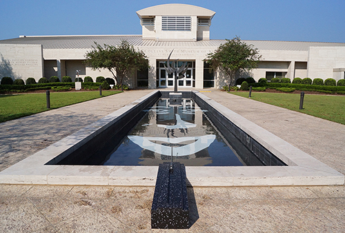
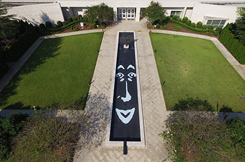
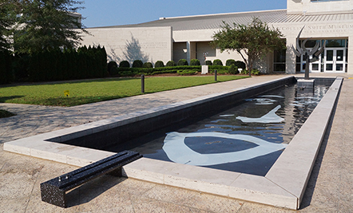
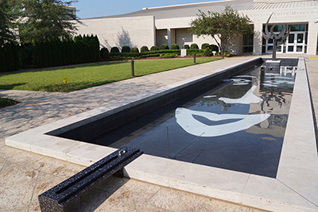

2017 August, Outdoor Kinetic Sculpture
 
 
Floating Identity in Auburn uses the water in the reflecting pool as a metaphor for the fluidity of the modern society, and the image of the woman’s face submerged in the water as a symbol for the socially-agreed-upon beauty and identity standards of the modern woman. The audience may change the expression of the face using the manual handle–revealing the variations in the standard for female identity in today’s society.
Funding: Jule Collins Smith Museum of Fine Art
Exhibition
2017 October - 2018 October, Jule Collins Smith Museum of Fine Art, Auburn, AL